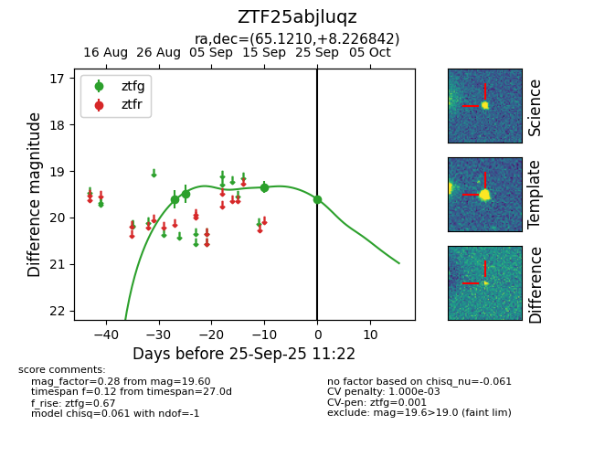
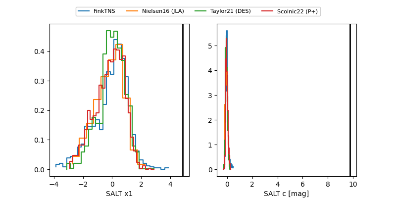

FINK: ZTF25abjluqz
Lasair: ZTF25abjluqz
ALeRCE: ZTF25abjluqz
ZTF25abjluqz (ztf,fink)
equatorial (ra, dec) = (65.1210,+8.22684)
galactic (l, b) = (185.6551,-28.28583)


last ztfg=19.60
4 ztfg detections